Care for the Future
Integrated Project
Food, work, land, and childhood — four commitments, one community.
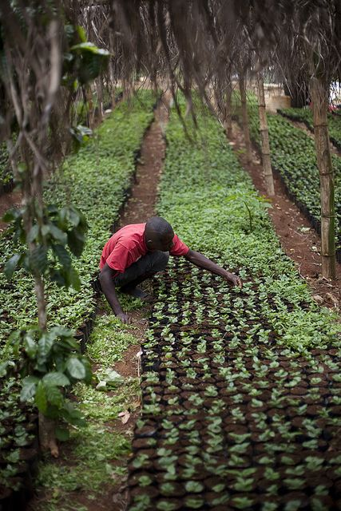
Why this project exists
Kenyan agriculture has modernized in pockets, but the average small farmer hasn't kept up — the tools on offer are too technical, or too expensive. Maize yields run about 25% below the national average, and nearly half the country lives below the poverty line.
The cost lands hardest on children: close to half are stunted by malnutrition, worst where food depends entirely on local harvests.
"The solutions offered are rarely built for the farmer actually holding the hoe."
Four plots, one field
CFTFIP works on four fronts at once, because food, income, environment, and child safety are one problem, not four.
Growing more, and growing smarter
Better harvests and better nutrition for children and expectant mothers.
Read more about agriculture and food securityLivelihoods beyond the farm
Small trades, agribusiness, and creative work that earn their keep.
Read more about economic developmentProtecting the land everything depends on
Trees, water, energy, and climate-smart farming in daily practice.
Read more about environment and climateAccountability, and protecting children
Holding leaders to account, and keeping children safe.
Read more about lobbying and advocacy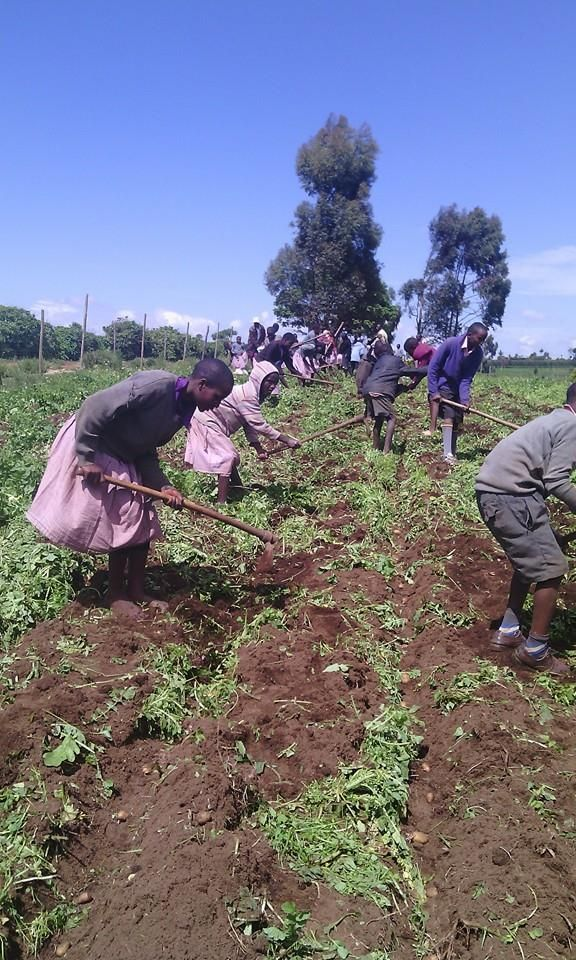
"Building sustainable ecosystems starts with community-driven accountability and local action."
How we'll know it's working
An M&E plan built with program staff from day one: indicators, timelines, and donor reporting.
A running record of implementation progress.
Work plan against actual performance, and what to fix.
A full account, with recommendations.
Outputs, outcomes, and the year ahead.
Where the funding goes
What it costs to build something real.
| Item | Cost (KES) |
|---|---|
| Land procurement | 300,000 |
| Building offices | 700,000 |
| Office equipment | 250,000 |
| Legal permit & certification | 50,000 |
| Website creation | 20,000 |
| Labour | 150,000 |
| Community mobilization / participation | 100,000 |
| Water tank & installation (10,000L) | 110,000 |
| Inputs (seeds & livestock) for the community | 200,000 |
| Demo site establishment | 15,000 |
| Transport (motorbike) | 450,000 |
| Miscellaneous | 155,000 |
| Total | 2,500,000 |
Equivalent to approximately USD 25,000.
Nyalenda A, Kisumu East
Nyalenda A is one of Kisumu's densest informal settlements — food security, income, and environmental pressure all at close quarters.
It is also where child exploitation is most rampant, and where poverty pushes children hardest toward risk.
Gallery
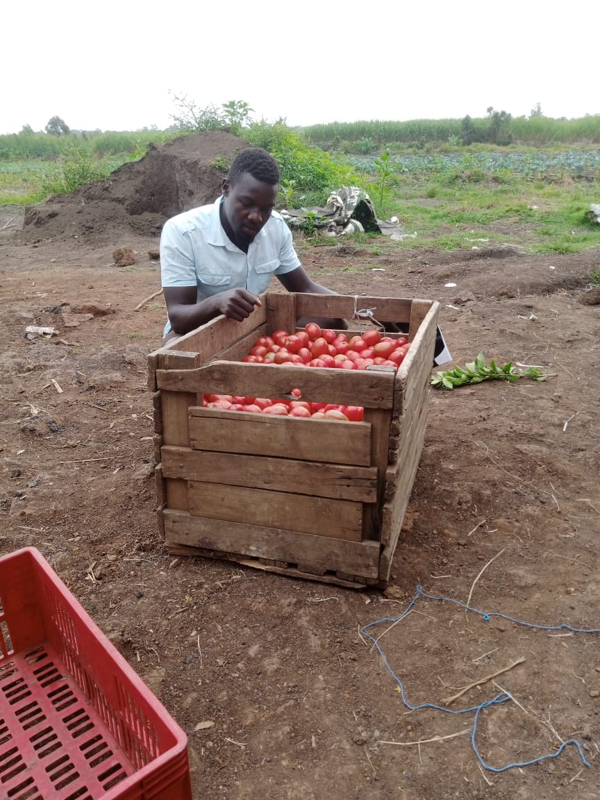
.jpeg)
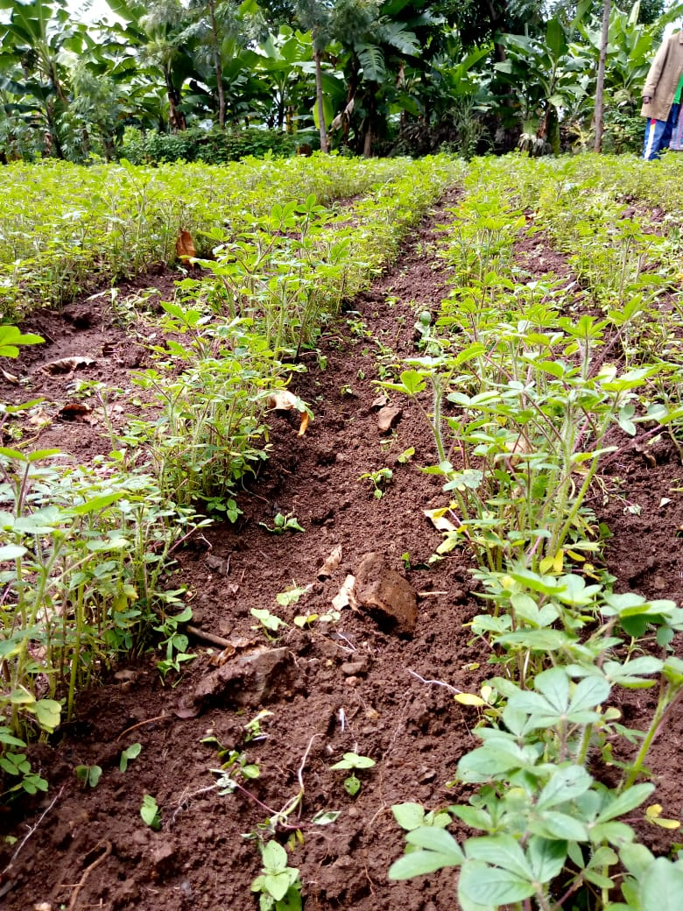
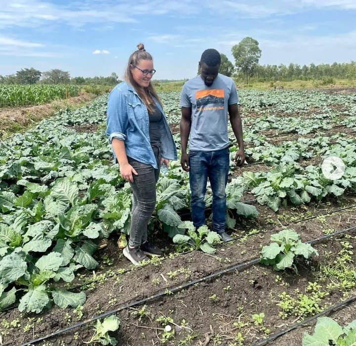
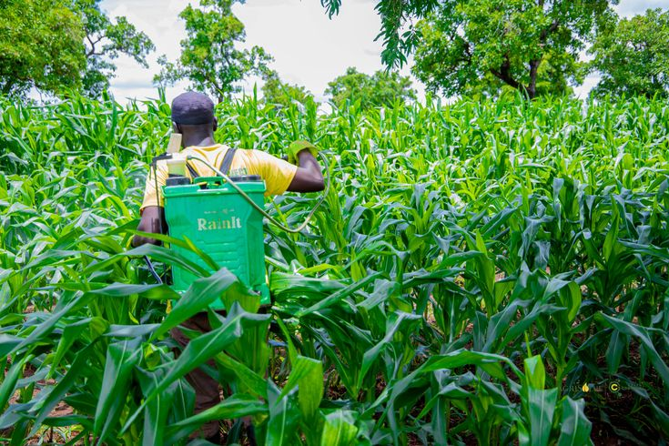
.jpeg)
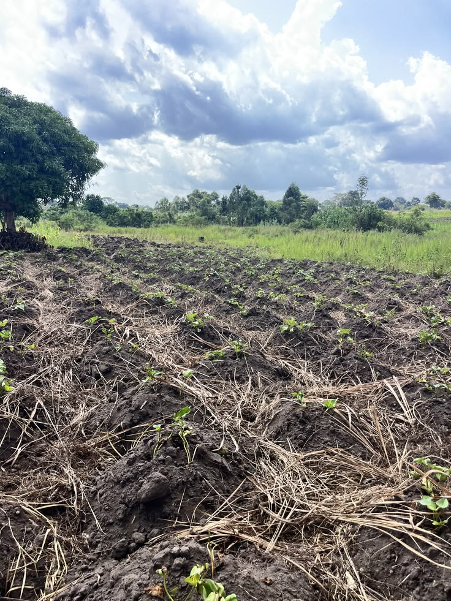
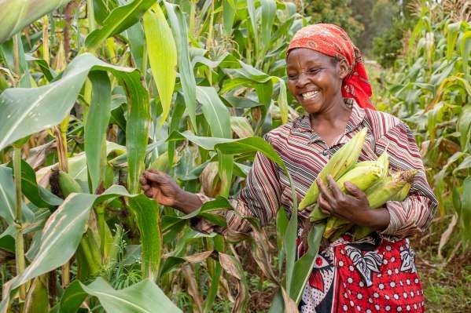
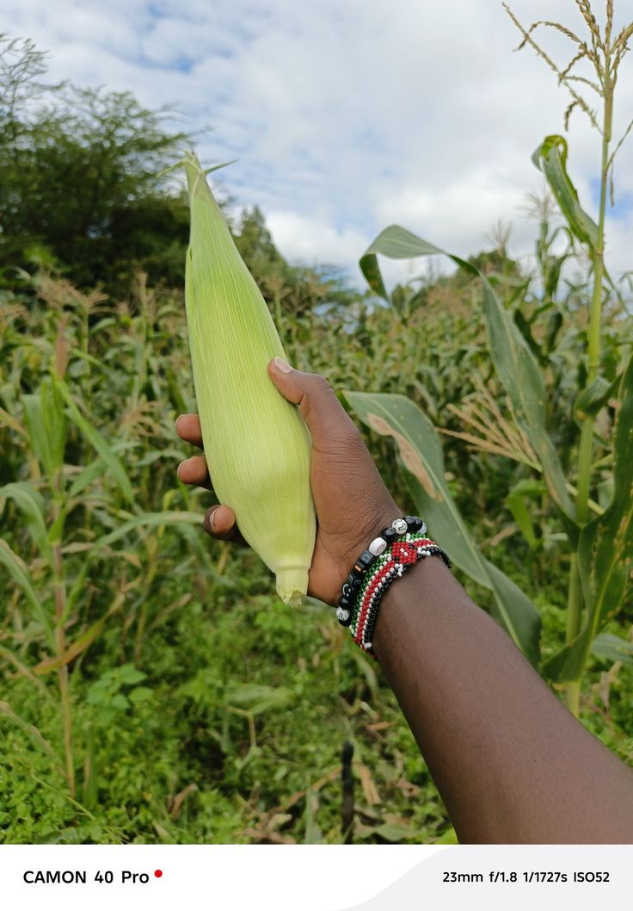
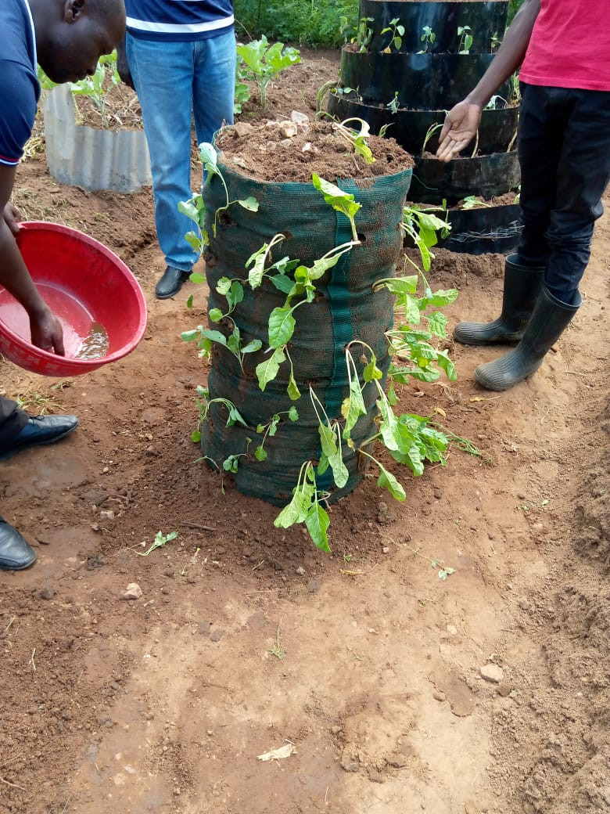
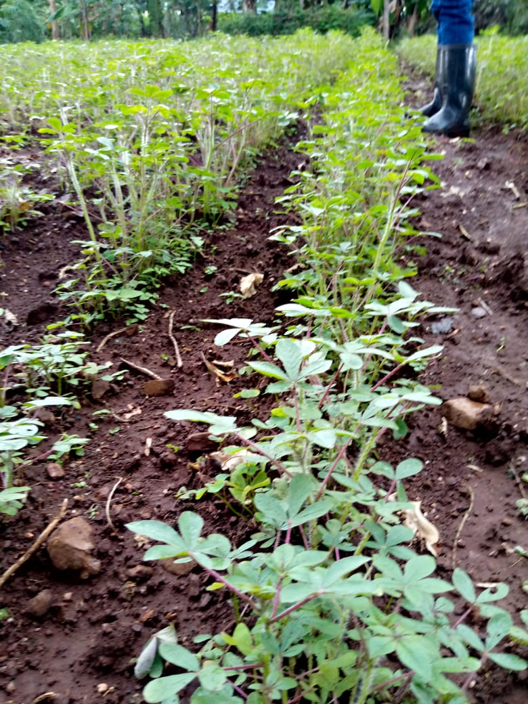
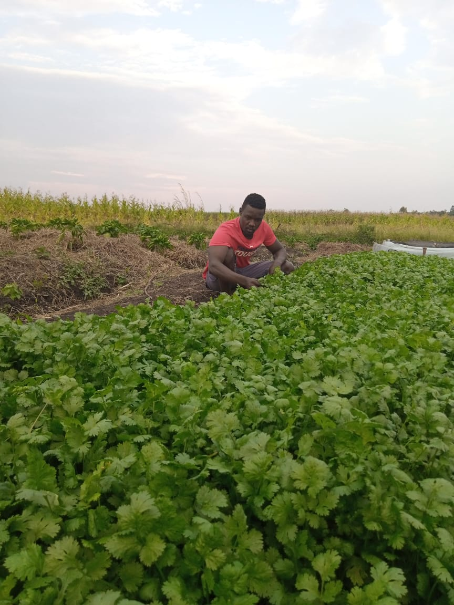
This only happens with you
Too capital-intensive to build alone. There is a place for you here.